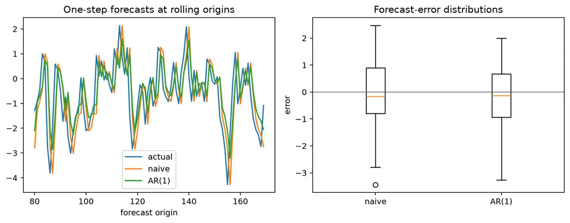
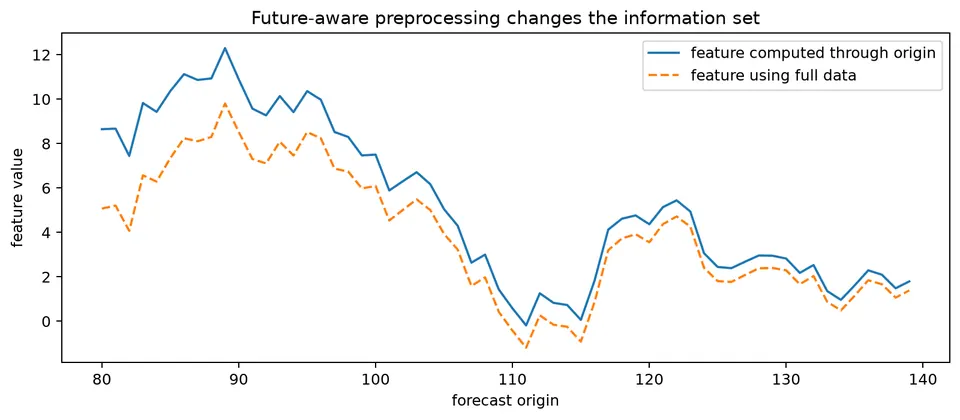
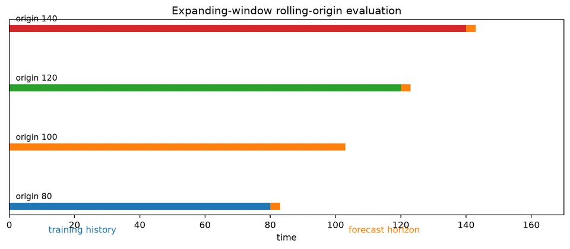
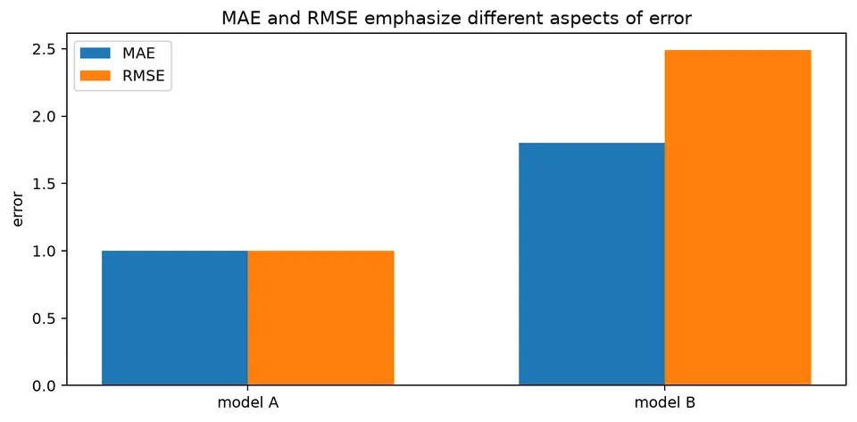
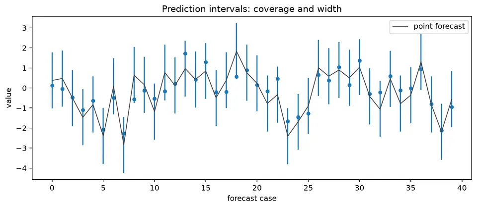
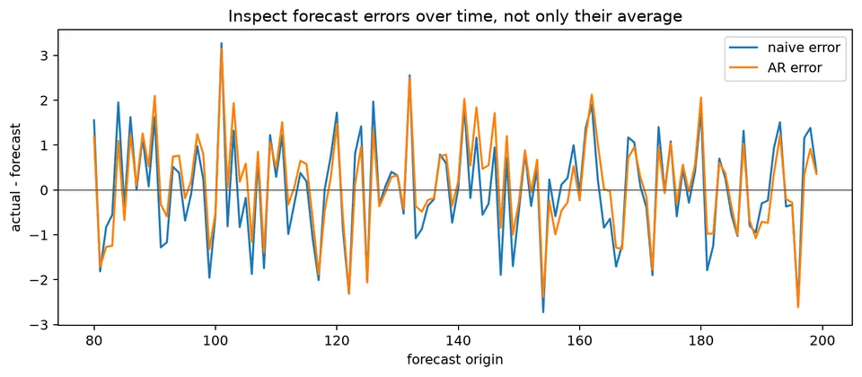

Forecast Evaluation and Backtesting
Forecast evaluation measures how an entire forecasting procedure performs on observations that were genuinely unknown when each prediction was made. It is therefore different from in-sample fit: transformations, feature construction, parameter estimation, predictor values, and model selection all have to respect the historical information boundary.
A useful backtest preserves chronological order, compares against sensible baselines, and reports accuracy by the horizons and loss functions that matter in deployment. Point metrics, interval calibration, and error behavior over time answer different questions, while leakage at any stage can make all of them look better than the live forecasting process would actually be.
Formula reference
| Metric / benchmark | General formula | Interpretation / special case |
|---|---|---|
| Forecast error | $e_{t,h}=y_{t+h}-\hat y_{t+h\mid t}$ | State the sign convention explicitly. |
| Mean error | $\mathrm{ME}=n^{-1}\sum_i e_i$ | Directional bias; positive under this convention means underforecasting on average. |
| MAE | $\mathrm{MAE}=n^{-1}\sum_i\lvert e_i\rvert$ | Linear penalty on absolute error. |
| MSE | $\mathrm{MSE}=n^{-1}\sum_i e_i^2$ | Squared-error loss. |
| RMSE | $\mathrm{RMSE}=\sqrt{n^{-1}\sum_i e_i^2}$ | Gives larger misses more weight than MAE. |
| MAPE | $\mathrm{MAPE}=100n^{-1}\sum_i\lvert e_i/y_i\rvert$ | Undefined at zero and unstable near zero. |
| sMAPE | $\mathrm{sMAPE}=100n^{-1}\sum_i\frac{2\lvert y_i-\hat y_i\rvert}{\lvert y_i\rvert+\lvert\hat y_i\rvert}$ | One common symmetric-percentage convention; software definitions can differ. |
| MASE scale | $Q_m=(T-m)^{-1}\sum_{t=m+1}^{T}\lvert y_t-y_{t-m}\rvert$ | Use $m=1$ for nonseasonal naive scaling or seasonal period $m$. |
| MASE | $\mathrm{MASE}=[n^{-1}\sum_i\lvert e_i\rvert]/Q_m$ | Values below 1 beat the corresponding in-sample naive scale. |
| RMSSE | $\mathrm{RMSSE}=\sqrt{[n^{-1}\sum_i e_i^2]/[(T-m)^{-1}\sum_{t=m+1}^{T}(y_t-y_{t-m})^2]}$ | Squared-error scaled analogue of MASE. |
| Naive forecast | $\hat y_{t+h\mid t}=y_t$ | Random-walk benchmark. |
| Seasonal naive | $\hat y_{t+h\mid t}=y_{t+h-s\lceil h/s\rceil}$ | Repeats the most recent observation from the same season. |
| Drift forecast | $\hat y_{t+h\mid t}=y_t+h(y_t-y_1)/(t-1)$ | Linear extrapolation of average historical change. |
| Empirical interval coverage | $n^{-1}\sum_i I(L_i\le y_i\le U_i)$ | Compare with nominal coverage $1-\alpha$. |
| Average interval width | $n^{-1}\sum_i(U_i-L_i)$ | Sharpness measure; narrower is better only when calibration is adequate. |
| Interval score | $(U-L)+\frac{2}{\alpha}(L-y)I(y<L)+\frac{2}{\alpha}(y-U)I(y>U)$ | Proper score balancing width and misses for a central $(1-\alpha)$ interval. |
| Pinball loss | $L_\tau(y,q)=(\tau-I(y<q))(y-q)$ | Proper loss for a forecast quantile $q$ at level $\tau$. |
Worked calculation: three errors and one scale
Suppose the actual values are $(10,12,9)$ and forecasts are $(9,11,10)$. Using the convention $e=y-\hat y$, the errors are $(1,1,-1)$, so
$$ \mathrm{MAE}=\frac{1+1+1}{3}=1, \qquad \mathrm{RMSE}=\sqrt{\frac{1+1+1}{3}}=1. $$
If the in-sample naive scale is 2, then
$$ \mathrm{MASE}=\frac{1}{2}=0.5. $$
The scale must be calculated using only the training portion available at each forecast origin. Reusing a scale computed from the full series introduces leakage. A rolling-origin evaluation repeats this calculation through time so that every forecast is produced using past information only.

The figure makes the evaluation design explicit: the forecast origin moves forward, the model is refit or updated using the information available at that date, and the later observation is used only to score the forecast.
Forecast evaluation asks a different question from in-sample fit: How well would this forecasting procedure have predicted observations that were genuinely in the future when each forecast was issued?
Preserve Temporal Order
Randomly shuffling observations destroys the information structure of a forecasting problem. A valid evaluation keeps training observations earlier than validation or test observations. Validation periods can be used for model or hyperparameter selection, while the final test period should remain untouched until the procedure has been selected.

The figure contrasts a valid chronological split with a leaked evaluation. The issue is not only where the target rows are split: preprocessing, feature construction, imputation, and predictor forecasts must also respect the same information boundary.
Rolling-Origin Evaluation
A single holdout period can give a noisy or regime-specific result. Rolling-origin evaluation repeats the forecasting experiment at several historical origins. An expanding window keeps all available history, while a rolling window retains only the most recent observations and can be useful when older regimes are less relevant.
For horizon $h$, define the forecast error at origin $t$ as
$$ e_{t,h}=y_{t+h}-\hat y_{t+h\mid t}. $$

The rolling-origin figure shows how the training window, origin, and forecast horizon move together. Accuracy should be reported by horizon whenever short- and long-horizon decisions have different importance.
Baselines First
Useful baselines include naive, seasonal-naive, drift, and historical-mean forecasts. A complicated method that cannot improve on a sensible baseline on the same evaluation origins has not demonstrated additional forecasting value.

The baseline figure shows that different simple rules encode different assumptions: persistence, repeating seasonality, linear drift, or reversion to a stable historical mean. Choose the baseline that reflects the simplest plausible structure in the problem.
Point Forecast Metrics
For errors $e_i=y_i-\hat y_i$,
$$ \mathrm{MAE}=\frac{1}{n}\sum_{i=1}^{n}|e_i|, \qquad \mathrm{RMSE}=\sqrt{\frac{1}{n}\sum_{i=1}^{n}e_i^2}. $$
Mean Absolute Scaled Error compares the absolute forecast error with an in-sample naive scale. For seasonal period $m$,
$$ \mathrm{MASE}= \frac{\frac{1}{n}\sum_{i=1}^{n}|e_i|} {\frac{1}{T-m}\sum_{t=m+1}^{T}|y_t-y_{t-m}|}. $$
MAPE can be useful when values are strictly positive and comfortably away from zero, but it is undefined at zero and unstable near zero.

The point-metrics figure illustrates that MAE and RMSE can rank the same errors differently because RMSE gives more weight to large misses. Metric choice should reflect the loss that matters in deployment rather than habit.
Prediction Intervals
Prediction intervals should be evaluated for both calibration and sharpness. Coverage measures how often observations fall inside the stated interval, while width measures how informative the interval is. Coverage should also be inspected by forecast horizon and regime.

The figure shows why nominal coverage alone is not enough: intervals can achieve high coverage simply by being too wide. A useful interval is both appropriately calibrated and reasonably narrow.
For probabilistic forecasts, quantile or pinball loss evaluates predicted quantiles directly and can be aggregated across several quantile levels.
Leakage
Common leakage sources include full-data normalization, future-aware imputation, centered rolling features, selecting hyperparameters on the final test period, using future exogenous values that would not have been known at the forecast origin, and shuffled cross-validation.
Every feature should answer the same question: Would this value have been available when the forecast was issued?
Information criteria such as AIC, AICc, and BIC can help select candidates in sample, but they are not substitutes for out-of-sample forecast evaluation.
See the companion forecast-backtesting notebook for an additional worked environment.
Student guide: make the forecast experiment explicit
Forecast evaluation is an experiment repeated at historical dates. The central object is not only a fitted model; it is the entire forecasting procedure:
- how the data are transformed;
- how features are constructed;
- how parameters are estimated;
- how future predictors are obtained;
- how the forecast is produced;
- how the error or interval score is recorded.
If any step uses information from after the forecast origin, the evaluation is optimistic even if the final model equation itself looks valid.
Information sets and forecast origins
Let $\mathcal F_t$ denote the information available immediately after observing $y_t$. Under squared-error loss, the optimal one-step conditional-mean forecast is
$$ \hat y_{t+1|t}=E(y_{t+1}\mid\mathcal F_t), $$
and a two-step forecast is
$$ \hat y_{t+2|t}=E(y_{t+2}\mid\mathcal F_t). $$
The notation emphasizes the information boundary. A forecast made at time $t$ cannot use $y_{t+1}$ to tune a transformation, estimate a scaling constant, choose a lag order, or fill a missing value.
For fixed horizon $h$,
$$ e_{t,h}=y_{t+h}-\hat y_{t+h|t}. $$
State the sign convention because directional bias changes sign if error is defined as forecast minus actual. MAE and RMSE are unaffected by that reversal, but mean error and calibration plots are not.
A concrete expanding-window calculation
Suppose the observed series is
| time | 1 | 2 | 3 | 4 | 5 | 6 | 7 |
|---|---|---|---|---|---|---|---|
| $y_t$ | 10 | 12 | 11 | 14 | 13 | 16 | 15 |
Use the naive rule $\hat y_{t+1|t}=y_t$ and evaluate one-step forecasts at origins $t=3,4,5,6$:
| origin $t$ | training values | forecast | actual | error |
|---|---|---|---|---|
| 3 | 10, 12, 11 | 11 | 14 | 3 |
| 4 | 10, 12, 11, 14 | 14 | 13 | -1 |
| 5 | 10, 12, 11, 14, 13 | 13 | 16 | 3 |
| 6 | 10, 12, 11, 14, 13, 16 | 16 | 15 | -1 |
The four errors are $(3,-1,3,-1)$. Therefore,
$$ \mathrm{MAE}=\frac{3+1+3+1}{4}=2, $$
and
$$ \mathrm{RMSE} =\sqrt{\frac{3^2+(-1)^2+3^2+(-1)^2}{4}} =\sqrt5 \approx2.236. $$
The mean error is
$$ \mathrm{ME}=\frac{3-1+3-1}{4}=1, $$
so the forecasts underpredict on average in this short evaluation. A single absolute-error score would hide that directional bias.
An expanding window uses every observation that has become available. A rolling window instead retains the most recent $w$ observations and can adapt more quickly after a structural change.
Baselines are part of the scientific question
The most useful baseline depends on the structure of the series.
For a persistent non-seasonal level, the naive forecast is
$$ \hat y_{t+h|t}=y_t. $$
For seasonal period $s$, a seasonal-naive forecast reuses the most recent observed value from the same season:
$$ \hat y_{t+h|t}=y_{t+h-s\lceil h/s\rceil}. $$
A common drift forecast extrapolates the average historical change:
$$ \hat y_{t+h|t} =y_t+h\frac{y_t-y_1}{t-1}. $$
For a stable series without meaningful persistence, a historical-mean forecast is
$$ \hat y_{t+h|t}=\frac{1}{t}\sum_{j=1}^{t}y_j. $$
The baseline is not a disposable preliminary. If an advanced procedure cannot improve on it using the same origins and horizons, the extra complexity has not shown forecasting value.
Point metrics and what they reward
For $n$ evaluation cases,
$$ \mathrm{MAE}=\frac{1}{n}\sum_{i=1}^{n}|e_i|, \qquad \mathrm{RMSE}=\sqrt{\frac{1}{n}\sum_{i=1}^{n}e_i^2}. $$
MAE weights absolute errors linearly. RMSE gives disproportionately more influence to large misses. The appropriate choice depends on the decision loss.
Mean error,
$$ \mathrm{ME}=\frac{1}{n}\sum_{i=1}^{n}e_i, $$
measures directional bias but can be close to zero when positive and negative errors cancel. Report it alongside an absolute metric when systematic over- or under-prediction matters.
For seasonal period $m$, define the training scale
$$ Q_m=\frac{1}{T-m}\sum_{t=m+1}^{T}|y_t-y_{t-m}|, $$
then
$$ \mathrm{MASE}=\frac{\frac{1}{n}\sum_i|e_i|}{Q_m}. $$
When the evaluation is designed to reproduce deployment, recompute the scale within each training window. A MASE below 1 means the method's average absolute error is smaller than the corresponding in-sample seasonal-naive change scale.
MAPE is
$$ \mathrm{MAPE}=\frac{100}{n}\sum_i\left|\frac{e_i}{y_i}\right|. $$
It is undefined when $y_i=0$ and can become arbitrarily large when $y_i$ is near zero. Percentage metrics should therefore be chosen only when their denominator is meaningful for the application.
Interval forecasts
For interval forecast $(L_i,U_i)$ with nominal coverage $1-\alpha$, empirical coverage is
$$ \widehat{\mathrm{Coverage}} =\frac{1}{n}\sum_{i=1}^{n}\mathbf 1\{L_i\le y_i\le U_i\}. $$
Coverage alone is insufficient. An interval from negative infinity to positive infinity has perfect coverage and no practical value. A useful report includes coverage, average width, coverage by horizon, the size of misses, and whether misses cluster in high-volatility or changing-regime periods.
For a Gaussian stationary AR(1) with coefficient $\phi$ and innovation variance $\sigma^2$, the $h$-step forecast-error variance is
$$ \sigma_h^2 =\sigma^2\sum_{j=0}^{h-1}\phi^{2j} =\sigma^2\frac{1-\phi^{2h}}{1-\phi^2}. $$
When $|\phi|<1$, this approaches the unconditional variance $\sigma^2/(1-\phi^2)$ as the horizon grows.
Leakage audit
Ask the same question of every operation: Could this value have been computed at the forecast origin?
| Operation | Unsafe version | Safe version |
|---|---|---|
| scaling | fit mean and standard deviation on all rows | fit them inside each training window |
| imputation | interpolate using observations after the gap | use past-only rules or an explicit forecasting model |
| rolling feature | centered rolling mean | trailing rolling mean ending at $t$ |
| feature selection | choose lags using the final test period | choose using training/validation origins |
| external predictor | use realized $x_{t+h}$ | forecast $x_{t+h}$ or use a value known in advance |
| seasonal normalization | estimate seasonal indices from the full sample | estimate them from data available at each origin |
Leakage can also enter through software defaults, cached preprocessing objects, or feature tables built before the split. Inspect at least one forecast origin by hand and verify the timestamp of every input.
Comparing models fairly
Evaluate all candidates on identical origins, horizons, transformations, and target rows. A comparison might look like
| model | MAE $h=1$ | MAE $h=3$ | RMSE $h=1$ | mean error |
|---|---|---|---|---|
| seasonal naive | ||||
| ARIMA | ||||
| dynamic regression |

The horizon plot shows why one average score can hide important differences. A model can be best at one-step prediction and lose that advantage at longer horizons.
Model classes also differ in how they adapt as new observations arrive. Exponential smoothing, for example, updates a latent level recursively rather than refitting a large parameter set at each step.

This figure is useful in evaluation because the update rule itself is part of the forecasting procedure. A fair backtest must reproduce that update chronologically rather than estimate the smoothed state using future observations.
Plot errors over calendar time as well as by horizon.

The time plot can reveal regime-specific failures that disappear in an overall average. Statistical tests comparing forecast errors also require care because errors from adjacent origins can overlap, especially for multi-step horizons.
Reproducible evaluation recipe
- State the response, sampling interval, horizon, and decision loss.
- Reserve a final test period before tuning.
- Choose at least one domain-appropriate baseline.
- Specify expanding or rolling origins.
- At each origin, fit preprocessing and the model using past data only.
- Produce point and interval forecasts.
- Record errors, interval scores, fit failures, and the available sample.
- Summarize by horizon and inspect errors over time.
- Refit the selected procedure on all allowed historical data.
- Record how the live forecast will obtain future predictors and update itself.